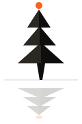
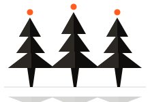

01 · The Brand in One Line
Mirror Streams is a creative research practice investigating how systems — information, technology, organisations, feedback — shape human agency, and how we can redesign them to give people back time, attention and potential.
02 · Brand Essence
| What we are | A research-led creative practice |
|---|---|
| What we make | Original frameworks, interactive experiences, and tested methods |
| What we believe | The architecture of a system determines what people are able to do, what they must do, and how much freedom they have |
| What we are NOT | Consulting theatre. Generic AI hype. A productivity tool. A media brand. |
| Tone | Upstream, warm, precise, unhurried. Not corporate. Not performative. |
| Voice | Plain claims over adjectives. Mirrors, not instructions. |
03 · Visual Identity
Color System
A quiet surface, a dark word, one chromatic moment. The visual equivalent of: a calm room, a question, an ember.
Color Hierarchy
- Mist — page background, dominant surface
- Ink — primary text, body copy
- Ember — section labels, links, key moments (use sparingly)
- Ash — secondary text, metadata
- Stone — surfaces, cards, dividers
- Line — borders, hairlines
Color Don'ts
- Don't use ember as a background — it loses its meaning as a single accent
- Don't introduce more than one chromatic color — Mist + Ember is the rule
- Don't use pure black #000000 — too harsh against Mist
- Don't use pure white #ffffff — too clinical, loses the warmth of Mist
- Don't use ember for body text — it's for emphasis, not bulk reading
- Don't darken the page by default — Mist is the primary surface
04 · Typography
Type System
| Role | Family | Use |
|---|---|---|
| Display | Helvetica Neue 500 / -0.022em | Hero, H1, H2, blockquotes |
| Body | Helvetica Neue 400 | Body copy, paragraphs |
| Label | Helvetica Neue 500 / uppercase / 0.2em | Eyebrows, section labels |
| Mono | SF Mono | Code, technical references |
Single-family system since v0.3. Hierarchy comes from weight and size, not typeface. No webfont is loaded — zero network requests, no FOUT.
05 · Voice & Tone
Plain claims over adjectives.
Mirror, don't instruct. Reflect what is, not what should be. If you need three adjectives to make a sentence work, rewrite the sentence.
| Use | Avoid |
|---|---|
| investigate | disrupt |
| design | transform (as verb) |
| mirror | unlock |
| observe | empower |
| test | leverage |
| evidence | optimize |
| hypothesis | revolutionize |
| agency | game-changing |
| upstream | |
| partner |
06 · The Mark
Mirror · Streams
The Tree. A low-poly tree standing on a mirror line, with an ember spark floating above its crown. The tree is the system. The mirror line is the reflection — the idea, the question. The ember spark is the one thing that is alive and moving.

Tree + Mirror
Primary lockup — full reflection
Tree
Icon — favicon, avatar
Tree — Night
Forest experiment palette

Forest
Three equal trees — no tree is the boss
Provenance — derived, not invented
The mark is a 2D reduction of the exact geometry from the "Where Intelligence Lives" forest experiment — makeTree(): three stacked 7-sided flat-shaded cones, a trunk, and a floating spark above the crown. The 3D forest now uses the same numbers, so the mark and the experiment are one piece of work rather than two that resemble each other.
Geometry — the master path set
viewBox 0 0 120 180; tree occupies x 26–94, y 8–116; mirror line at y=116. The cones widen downward — that is the signature, and it is the same in the 3D forest.
| Element | Path |
|---|---|
| Cone 1 — top | M57 14 L40 40 L74 40 Z |
| Cone 2 — middle | M58 38 L34 66 L82 66 Z |
| Cone 3 — base | M60 62 L26 92 L94 92 Z |
| Left face (the 3D read) | … L57 40 Z / L58 66 Z / L60 92 Z |
| Trunk | M54 92 L66 92 L62 116 L58 116 Z |
| Spark | circle cx 57, cy 8, r 5 |
| Mirror line | M6 116 H114, 1px |
3D forest equivalent (mark units, trunk base at y=0): trunk 0–24 · cone 3 24–54 r=34 · cone 2 50–78 r=24 · cone 1 76–102 r=17 · spark 108.
Mark Don'ts
- Don't add a fourth cone — three is the tested geometry from the experiment
- Don't round the cones into a blob or add leaf detail — it kills the low-poly signature
- Don't put the tree above the mirror line — the tree is the real, the reflection is the idea
- Don't use a second chromatic colour in the mark
- Don't vary the cone proportions between applications
- Don't make the cones narrow toward the base — they widen downward, in the 2D mark and in the 3D forest
Favicon

The 2D mark reduced to a 100×100 tile — trunk, three cones, ember spark. Live on the site.
Motion — "the spark descends"
The single motion signature. An ember spark starts above the crown and descends into the tree, coming to rest inside the foliage with a soft halo. This is the forest experiment's argument as an animation — intelligence moving into the trees. 1.8s ease-in-out, one spark, no trails, no particles, no sound. Hold at rooted — a loop reads as a loading spinner.

| Phase | Time | Spark |
|---|---|---|
| Above | 0.0s | y 8 |
| Entering | 0.6s | y 30 |
| Through | 1.2s | y 55 |
| Rooted | 1.8s | y 80 + halo 0.18 |
1.8s ease-in-out. One spark, one tree. No trails, no particles, no camera moves, no sound. Hold at rooted — a loop reads as a loading spinner.
Building your own graphics
- Start from the master geometry — recombine, don't invent
- Reduce, don't add — every new piece should lose something
- One ember moment per composition
- Only two motion verbs: descend and ignite
- Check it against the thesis — if it could belong to a generic eco brand, it isn't finished
- Check it against the mirror — if it could belong to a different brand with a different name, it isn't finished either
How this aligns the visual experiments
| Experiment | How the mark connects it |
|---|---|
| Where Intelligence Lives | The source of the thesis — its adjacency graph is direction A, its taproot is direction B |
| AI Mirror | The mirror surface in direction E is that water, flattened to a hairline |
| void-mirror | Same instinct — one system, restrained palette |
| Museum of Becoming | The spark is the alive thing in a dark field — the ember room's move |
| Personal OS | Same role for the accent, its own colour — deliberately a separate product |
07 · Operating Principles
Technology means nothing unless it creates real value for real people in the real world.
Partnership, not solo building. Human benefit, not technology for technology's sake.
These are not marketing copy. They are operating rules. Every public artifact should be checkable against them.
08 · What's Next
- Designer to develop the ember-flame mark properly
- Test the palette against actual screenshots
- Re-evaluate gold #c9a96e (Personal OS) vs ember #ff5e1d (Mirror Streams) — keep both or unify
- One case study as evidence the brand works in practice
- Update website to reference the IP palette
- Decide whether the Personal OS pages move to Helvetica too, or keep their own character